Sturgill Simpson is frequently described as part of the new era of outlaw country musicians, a group that includes musicians like Tyler Childers, Chris Stapleton, Colter Wall, and Jason Isbell. Sturgill in particular has been at the forefront of this movement in alternative country and Americana music, winning a Grammy in 2015 for his second album Metamodern Sounds in Country Music among other accolades at the US and UK Americana Music Awards. Rolling Stone questioned whether he is country music’s savior.
He is also one of my favorite artists. I’ve been wanting to do a deeper dive into Sturgill’s music, and thankfully Charlie Thompson’s spotifyr package makes that easy. This project is heavily inspired both by Charlie’s analysis of Radiohead and by Simran Vatsa’s analysis of Taylor Swift’s music.
Alright, let’s load the packages we’ll need first.
library(spotifyr)
library(geniusr)
library(tidyverse)
library(ggridges)
library(ggthemes)
library(tidytext)
library(textdata)
library(tidymodels)
library(topicmodels)First we’ll need to pull track data from Spotify using spotifyr. I then filtered down to unique track names.
sturgill <- spotifyr::get_artist_audio_features("Sturgill Simpson")
sturgill <- sturgill %>%
rename(song_name = track_name) %>%
mutate(song_name_clean = str_to_lower(song_name),
song_name_clean = str_replace_all(song_name_clean, "[:punct:]", " ")) %>%
distinct(album_name, song_name, .keep_all = TRUE) %>%
filter(!album_id %in% c("6ItcaLLriMbKewC2Kd76Vr"))Then we’ll go ahead and connect the track information with lyrics from Genius.
strugill_id <- search_artist("Sturgill Simpson") %>%
pull(artist_id)
strugill_songs <- get_artist_songs_df(strugill_id)
sturgill_lyrics <- map(strugill_songs$song_id, get_lyrics_id) %>%
bind_rows()
sturgill_lyrics2 <- sturgill_lyrics %>%
select(song_name, line, song_id) %>%
group_by(song_id, song_name) %>%
dplyr::summarize(line = paste0(line, collapse = " ")) %>%
mutate(song_name_clean = str_to_lower(song_name),
song_name_clean = str_replace_all(song_name_clean, "[:punct:]", " "))
## join with sturgill track info from spotify
album_order <- c("Cuttin' Grass - Vol. 1 (Butcher Shoppe Sessions)", "SOUND & FURY", "A Sailor's Guide to Earth", "Metamodern Sounds in Country Music", "High Top Mountain")
sturgill_combined <- sturgill %>%
left_join(sturgill_lyrics2, by = c("song_name_clean")) %>%
select(-song_name_clean, - song_name.y) %>%
rename(song_name = song_name.x) %>%
filter(!is.na(line)) %>%
mutate(album_name = factor(album_name, levels = album_order)) While broadly fitting within the Americana genre (to the extent that Americana has hard boundaries), Sturgill’s music has evolved throughout his five albums, and that’s clearly evident by looking at the Spotify song features.
We might expect his latest album, SOUND & FURY to be a little more negative and higher energy than his others. Sturgill descibed it to KCRW by saying, “We went in without any preconceived notions and came out with a really sleazy, steamy rock n roll record. It’s definitely my most psychedelic, and also my heaviest. I had this idea that it’d be really cool to animate some of these songs, and we ended up with a futuristic, dystopian, post-apocalyptic, samurai film.”
sturgill_combined %>%
pivot_longer(danceability:tempo) %>%
filter(!name %in% c("mode", "liveness")) %>%
ggplot(aes(x = value, y = album_name, fill = album_name)) +
geom_density_ridges() +
facet_wrap(~ name, scales = "free_x") +
theme_classic() +
theme(legend.position = "none") +
labs(y = NULL)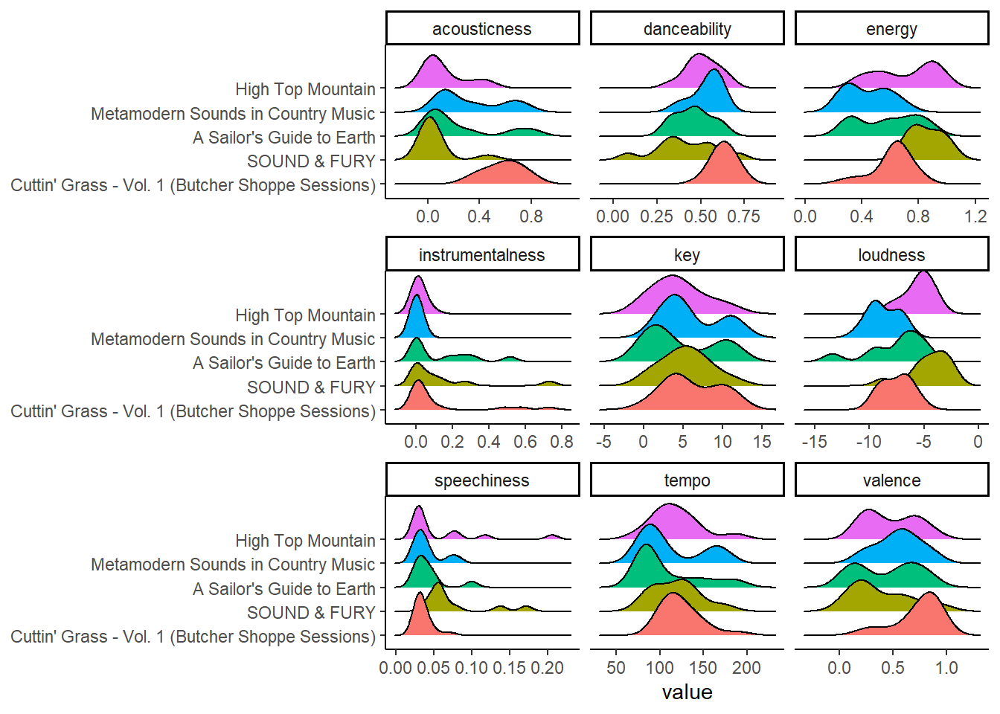
sturgill_combined %>%
arrange(desc(valence)) %>%
#slice_head(n = 20) %>%
mutate(song_name = factor(song_name, unique(song_name)),
song_name = fct_rev(song_name)) %>%
ggplot(aes(y = song_name, x = valence, color = album_name)) +
geom_segment(aes(x = 0, xend = valence, y = song_name, yend = song_name)) +
geom_point(size = 3, alpha = 0.7) +
theme_light() +
labs(y = NULL, x = "Valence") +
theme(panel.grid.major.y = element_blank(),
panel.border = element_blank(),
axis.ticks.y = element_blank(),
text = element_text(size=9))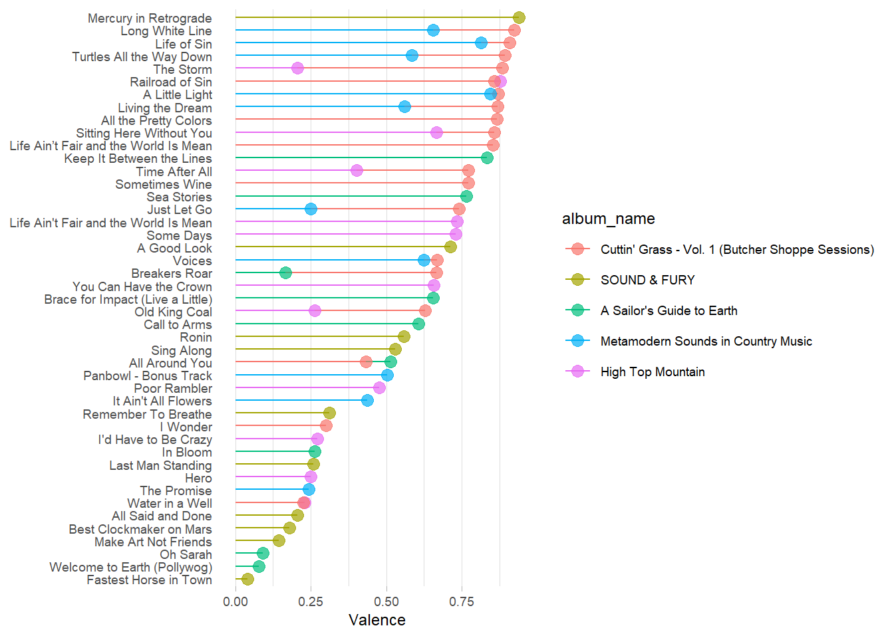
sturgill_combined %>%
arrange(desc(danceability)) %>%
#slice_head(n = 20) %>%
mutate(song_name = factor(song_name, unique(song_name)),
song_name = fct_rev(song_name)) %>%
ggplot(aes(y = song_name, x = danceability, color = album_name)) +
geom_segment(aes(x = 0, xend = danceability, y = song_name, yend = song_name)) +
geom_point(size = 3, alpha = 0.7) +
theme_light() +
labs(y = NULL, x = "danceability") +
theme(panel.grid.major.y = element_blank(),
panel.border = element_blank(),
axis.ticks.y = element_blank(),
text = element_text(size=9))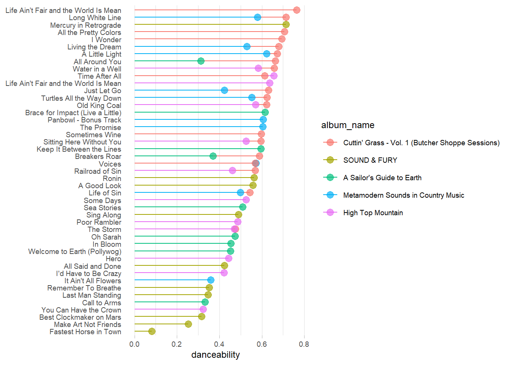
sturgill_combined %>%
arrange(desc(energy)) %>%
#slice_head(n = 20) %>%
mutate(song_name = factor(song_name, unique(song_name)),
song_name = fct_rev(song_name)) %>%
ggplot(aes(y = song_name, x = energy, color = album_name)) +
geom_segment(aes(x = 0, xend = energy, y = song_name, yend = song_name)) +
geom_point(size = 3, alpha = 0.7) +
theme_light() +
labs(y = NULL, x = "energy") +
theme(panel.grid.major.y = element_blank(),
panel.border = element_blank(),
axis.ticks.y = element_blank(),
text = element_text(size=9))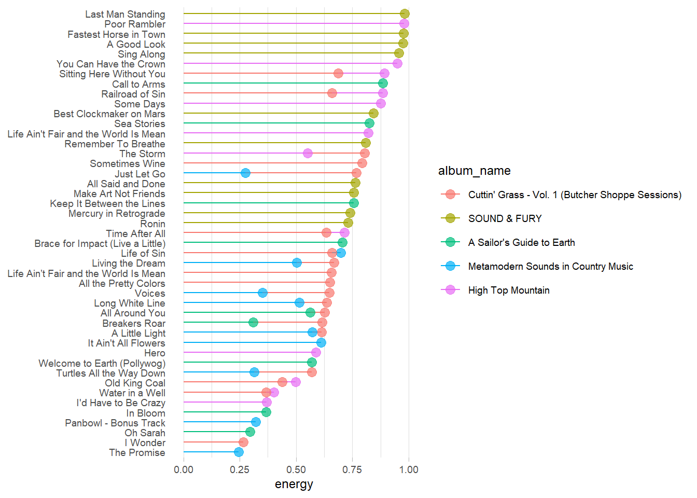
sturgill_combined %>%
ggplot(aes(x = energy, y = valence, label = song_name, color = album_name)) +
geom_point(color = "#E32636", alpha = 0.7, size = 2) +
ggrepel::geom_text_repel(size = 3, ) +
theme_classic() +
theme(legend.position = "none")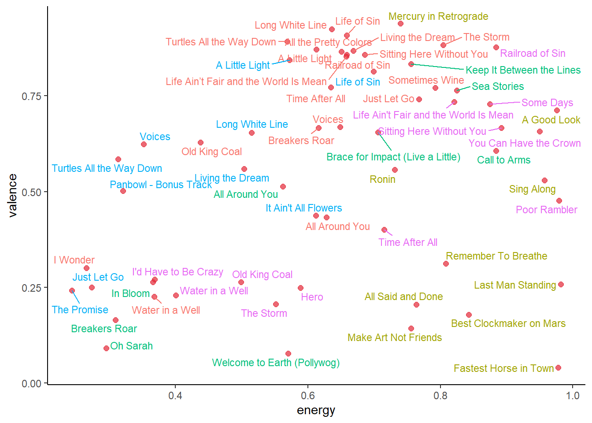
The final ridgeline plot shows Sturgill’s albums by valence, with the peaks showing the highest frequency of valence scores.
This absolutely tracks with expectations – SOUND & FURY is his only right-tailed album and his most negative, while Metamodern Sounds in Country Music is left-tailed (generally more positive). Both High Top Mountain and A Sailor’s Guide to Earth are bi-modal, with relatively even balances of positive and negative songs. The average valence ratings by album also support what the ridgeline plots show – that SOUND & FURY is the most negative while Metamodern Sounds in Country Music is the most positive… of his first four albums.
SOUND & FURY is both more negative and higher energy than his other albums – something we might expect from an album Sturgill described as “really sleazy, steamy rock n roll record” with an accompanying “futuristic, dystopian, post-apocalyptic” anime movie.
In terms of individual tracks on the first 4 albums, SOUND & FURY’s “Mercury in Retrograde” is by far his highest-valence song, a funky 70-ish song that sharply contrasts (at least sonically) with anything on High Top Mountain. “Fastest Horse in Town”, “Welcome to Earth (Pollywog)” and “Oh Sarah” are his three most negative songs, all with a valence rating under 0.1.
But we almost need to put Cuttin Grass in a category of its own when it comes to valence, danceability, and acousticness. Since it is an album of bluegrass covers of his own music, it’s interesting to see that it is so much happier and danceable than his other albums. Let’s do a direct comparison between the same songs’ regular vs. bluegrass versions:
sturgill_bg <- sturgill_combined %>%
filter(str_detect(album_name, "Cuttin")) %>%
pull(song_name)
sturgill_combined %>%
filter(song_name %in% sturgill_bg) %>%
arrange(song_name) %>%
select(song_name, album_name, valence, danceability, acousticness) %>%
mutate(album_name = fct_lump_min(album_name, min = 10)) %>%
group_by(song_name) %>%
mutate(song_count = n()) %>%
ungroup() %>%
filter(song_count == 2) %>%
arrange(desc(valence)) %>%
mutate(song_name = factor(song_name, rev(unique(song_name)))) %>%
ggplot(aes(y = song_name, x = valence, color = album_name)) +
geom_segment(aes(x = 0, xend = valence, y = song_name, yend = song_name)) +
geom_point(size = 3, alpha = 0.7) +
theme_classic() +
labs(y = NULL, x = "valence") +
theme(panel.grid.major.y = element_blank(),
panel.border = element_blank(),
axis.ticks.y = element_blank(),
text = element_text(size=9)) +
xlim(0,1)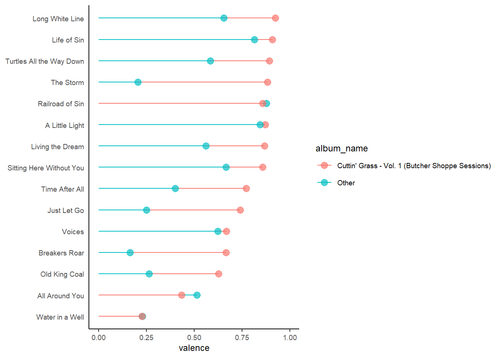
sturgill_combined %>%
filter(song_name %in% sturgill_bg) %>%
arrange(song_name) %>%
select(song_name, album_name, valence, danceability, acousticness) %>%
mutate(album_name = fct_lump_min(album_name, min = 10)) %>%
group_by(song_name) %>%
mutate(song_count = n()) %>%
ungroup() %>%
filter(song_count == 2) %>%
arrange(desc(danceability)) %>%
mutate(song_name = factor(song_name, rev(unique(song_name)))) %>%
ggplot(aes(y = song_name, x = danceability, color = album_name)) +
geom_segment(aes(x = 0, xend = danceability, y = song_name, yend = song_name)) +
geom_point(size = 3, alpha = 0.7) +
theme_classic() +
labs(y = NULL, x = "danceability") +
theme(panel.grid.major.y = element_blank(),
panel.border = element_blank(),
axis.ticks.y = element_blank(),
text = element_text(size=9)) 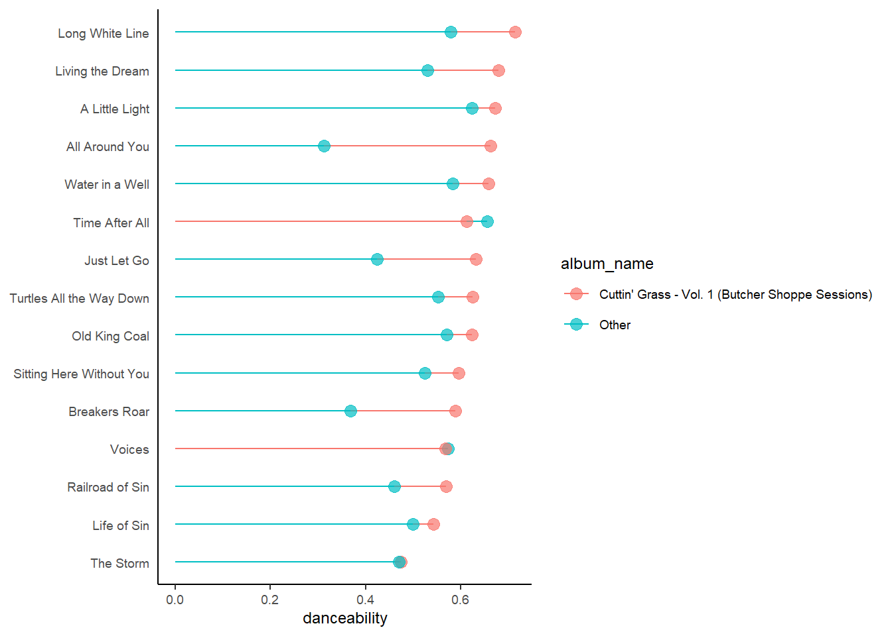
It’s pretty clear from the charts above that Strugill’s bluegrass is both more danceable and happier than his regular versions of songs! In fact, the Cuttin’ Grass version is happier in all but three songs!
From his early days, Sturgill has been compared with the early generation of outlaw country musicians. Most critics have compared his voice to Waylon Jennings, although Sturgill counts Merle Haggard as a larger influence.
Using spotifyr we can look for similarities in the three artists’ sounds. We’ll focus on Sturgill’s High Top Mountain, as it is by far his most traditional country album.
For the other two artists, who have far more songs in their discographies, it was a greater challenge to find a representative subset of their music for comparison. I settled on the Spotify “This is…” playlists, that Spotify often puts together for notable musicians, which collects the artists’ most important (and hopefully representative) songs. I then joined the playlist data with the artists’ track data to incorporate the sonic variables like energy, valence, and danceability.
In subsequent analysis, we might use Sturgill’s “This is…” playlist for an even more apples-to-apples comparison, although my guess is that this first look might minimize the differences between the artists.
# Pull track data for Merle and Waylon based from their Spotify "This is..." playlists
merle <- get_artist_audio_features("Merle Haggard")
merle_thisis <- get_playlist_tracks("37i9dQZF1DWU1xHgjMaSpW")
merle_thisis <- merle_thisis %>%
inner_join(merle, by = c("track.id" = "track_id"))
waylon <- get_artist_audio_features("Waylon Jennings")
waylon_thisis <- get_playlist_tracks("37i9dQZF1DZ06evO4si4pO")
waylon_thisis <- waylon_thisis %>%
inner_join(waylon, by = c("track.id" = "track_id"))
# Combine with Sturgill's High Top Mountain
artist_comp <- merle_thisis %>%
bind_rows(waylon_thisis) %>%
select(artist_name, track_name, energy, valence, danceability)
sturgill_comp <- sturgill %>%
filter(album_name == "High Top Mountain") %>%
select(artist_name, track_name = song_name, energy, valence, danceability)
artist_comp <- artist_comp %>%
bind_rows(sturgill_comp)
# Create charts of energy and valence
artist_comp %>%
ggplot(aes(x = energy, y = artist_name, fill = ..x..)) +
geom_density_ridges_gradient(scale = 0.9) +
scale_fill_gradient(low = "white", high = "red3") +
theme_classic() +
theme(panel.background = element_rect(fill = "white")) +
theme(plot.background = element_rect(fill = "white")) +
theme(legend.position = "none") +
ggtitle("Song Energy by Artist")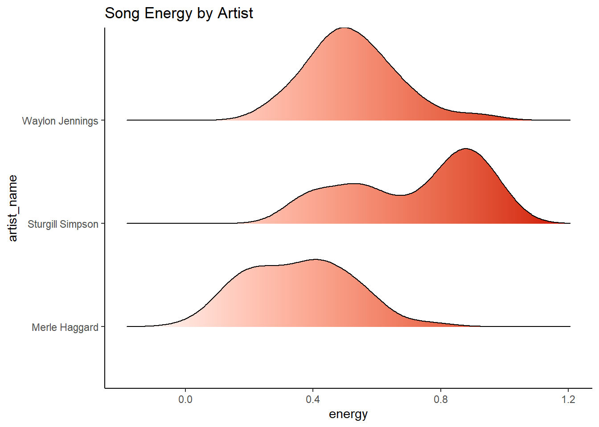
artist_comp %>%
ggplot(aes(x = valence, y = artist_name, fill = ..x..)) +
geom_density_ridges_gradient(scale = 0.9) +
scale_fill_gradient(low = "white", high = "red3") +
theme_classic() +
theme(panel.background = element_rect(fill = "white")) +
theme(plot.background = element_rect(fill = "white")) +
theme(legend.position = "none") +
ggtitle("Song Valence (Happiness) by Artist")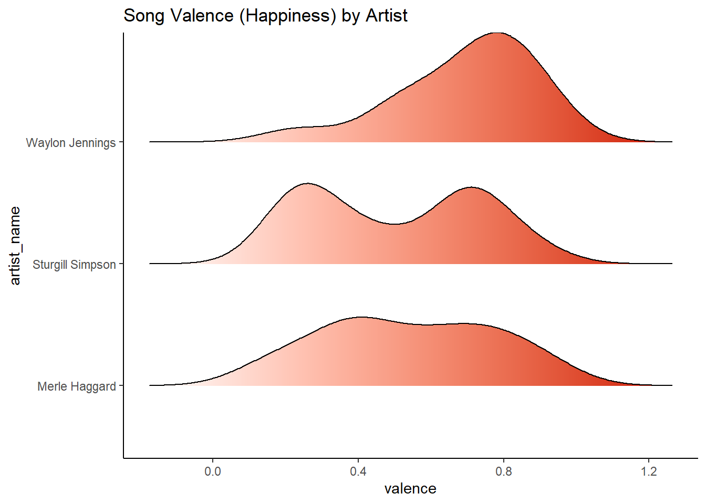
There are some fairly clear differences between the three artists despite us only looking at Sturgill’s first album. In the plot of song energy, Sturgill’s distribution is clearly left-tailed and higher energy, Merle has the larger percentage of lower-energy songs, and Waylon’s songs are more concentrated and mid-energy.
Waylon’s songs are also happier, with less variation in valence than the other two artists. Similar to the distribution of Merle Haggard’s song energy levels, there is wide variation in valence of his songs. Sturgill’s High Top Mountain is bi-modal in valence. It has a similar happiness range as Merle’s greatest hits, but a higher concentration of happy and unhappy songs.
Next we can look at lyrics by album according to the NRC leixcon, which sorts words into eight categories – joy, anticipation, trust, surprise, sadness, anger, disgust and fear.
tidy_sturgill <- sturgill_combined %>%
unnest_tokens(word, line) %>%
select(album_name, song_name, word) %>%
anti_join(stop_words) %>%
inner_join(get_sentiments("nrc")) %>%
filter(!sentiment %in% c("positive", "negative"))
sentiment_sturgill <- tidy_sturgill %>%
group_by(album_name, sentiment) %>%
count(album_name, sentiment)
sentiment_sturgill_albums <- sentiment_sturgill %>%
group_by(album_name) %>%
summarise(total_sentiments = sum(`n`))
sentiment_sturgill <- sentiment_sturgill %>%
left_join(sentiment_sturgill_albums, by = "album_name") %>%
mutate(perc = round(n/total_sentiments,3)) %>%
select(-c(total_sentiments, `n`))
## bar plot
ggplot(sentiment_sturgill, aes(y = sentiment, x = perc, fill = album_name)) +
geom_bar(stat = "identity", position = position_dodge()) +
theme_classic()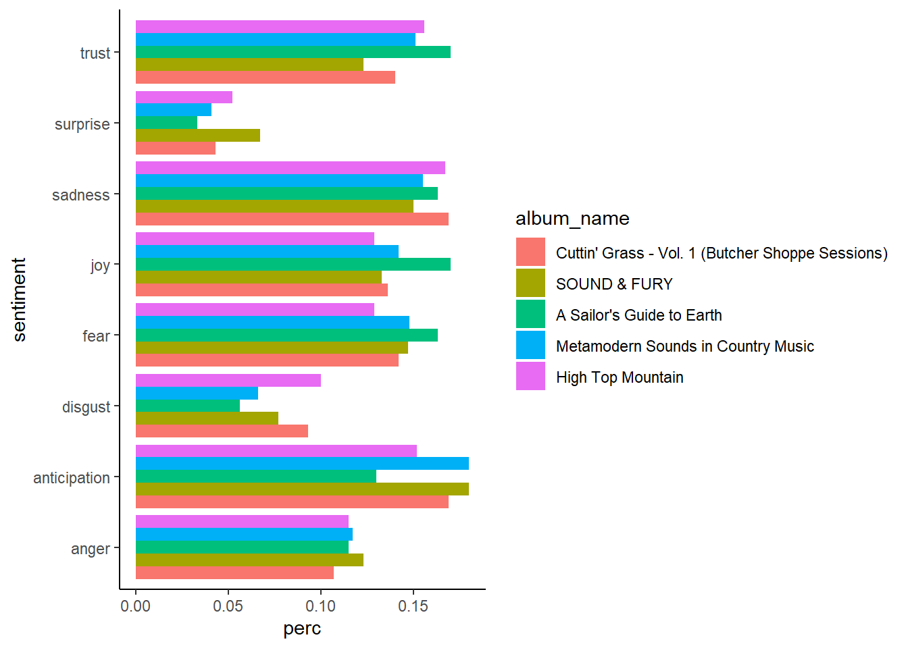
Across his albums, surprise, disgust, and anger are fairly infrequent emotions expressed in his lyrics, with relatively high levels of fear, joy, sadness, and trust.
sentiment_sturgill_track <- tidy_sturgill %>%
group_by(song_name, sentiment) %>%
count(song_name, sentiment)
sentiment_sturgill_track2 <- sentiment_sturgill_track %>%
group_by(song_name) %>%
summarise(total_sentiments = sum(`n`))
sentiment_sturgill_track <- sentiment_sturgill_track %>%
left_join(sentiment_sturgill_track2, by = "song_name") %>%
mutate(perc = round(n/total_sentiments,3)) %>%
select(-c(total_sentiments, `n`))
sentiment_sturgill_track %>%
filter(sentiment == "sadness") %>%
arrange(desc(perc)) %>%
head(10)## # A tibble: 10 x 3
## # Groups: song_name, sentiment [10]
## song_name sentiment perc
## <chr> <chr> <dbl>
## 1 Welcome to Earth (Pollywog) sadness 0.375
## 2 Old King Coal sadness 0.333
## 3 Remember To Breathe sadness 0.333
## 4 Railroad of Sin sadness 0.312
## 5 Breakers Roar sadness 0.3
## 6 Brace for Impact (Live a Little) sadness 0.28
## 7 Voices sadness 0.269
## 8 Panbowl - Bonus Track sadness 0.259
## 9 I Wonder sadness 0.238
## 10 All the Pretty Colors sadness 0.231We can also look at which songs have the highest percentage of sad lyrics. One third of “Old King Coal” and “Remember to Breathe” have words that express sadness according to the nrc lexicon. That definitely tracks with “Old King Coal” in particular – a song about economic struggles and opioid use in Appalachian coal communities. Here are the first two verses:
Many a man down in these here hills Made a living off that old black gold Now there ain’t nothing but welfare and pills And the wind never felt so cold I’ll be one of the first in a long long line Not to go down from that old black lung My death will be slower than the rest of my kind And my life will be sadder than the songs they all sung
Yeah, those are some sad lyrics.
Finally, we can compare lyrical sentiment with sonic features like valence to see whether Sturgill’s songs are typically cohesive in the sense that sad-sounding songs also have sad lyrics, and vice versa. In cohesive songs we might expect valence and the nrc sentiment to be closely related.
To test this, we can combine the original spotifyr data frame with the track sentiment analysis data frame.
sentiment_sturgill_track_sum <- sentiment_sturgill_track %>%
group_by(song_name) %>%
summarize(neg_emotions = sum(perc[sentiment == "anger" | sentiment == "disgust" |
sentiment == "fear" | sentiment == "sadness"]))
sentiment_sturgill_combined <- sturgill %>%
select(song_name, valence, energy) %>%
inner_join(sentiment_sturgill_track_sum, by = "song_name")
sentiment_sturgill_combined %>%
ggplot(aes(x = neg_emotions, y = valence, label = song_name)) +
geom_point() +
ggrepel::geom_text_repel(size = 3) +
theme(panel.background = element_rect(fill = "white")) +
theme(plot.background = element_rect(fill = "white")) +
xlab("Percentage Lyrics with Negative Emotions") +
ylab("Happiness (Valence score)")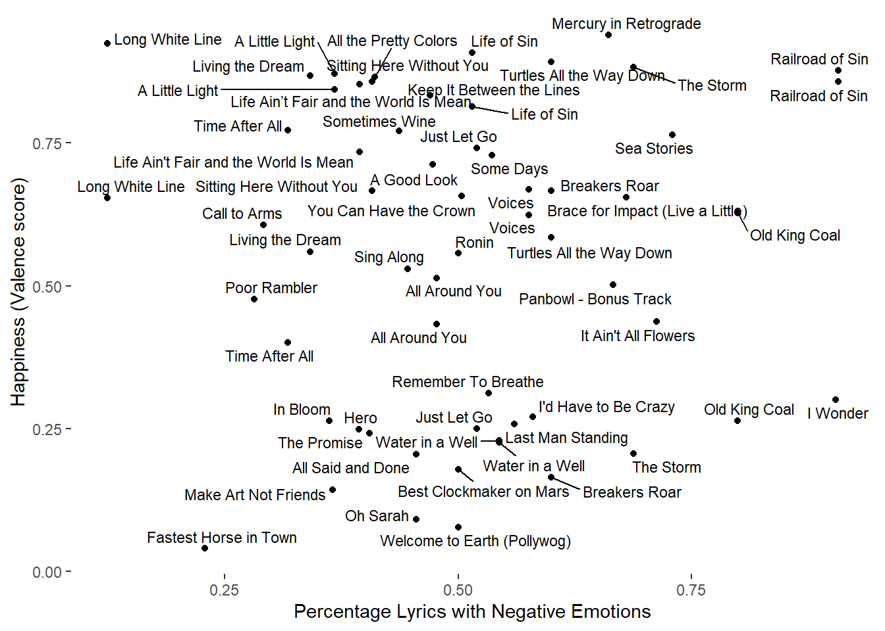
As the resulting plot shows, there appears to be little relationship between a song’s lyrics and how happy or sad the song itself is. That makes for interesting contrasts between lyrical sentiment and a song’s feeling.
For example, “Mercury in Retrograde” is both high-valence and has a high percentage of negative emotions expressed in its lyrics. While the music itself is bouncy and funky, the lyrics express disdain at the fakeness and self-serving mentality of people in the music business:
Living the dream makes a man wanna scream Light a match and burn it all down Head back home to the mountain Far away from all of the pull Oh, all the journalists and sycophants wielding their brands And all the traveling trophies and award show stands And all the haters wishing they was in my band Sorry, boys, the bus is plumb full Mercury must be in retrograde again But at least it’s not just hangin’ around, pretendin’ to be my friend Oh, the road to Hell is paved with cruel intention If it’s not nuclear war, it’s gonna be a divine intervention
Let’s see what the log odds for the lyrics in each album look like. Our corpus is pretty small, but this may be interesting nevertheless!
library(tidylo)
sturgill_combined %>%
unnest_tokens(word, line) %>%
select(album_name, song_name, word) %>%
filter(!str_detect(album_name, "Cuttin")) %>%
anti_join(stop_words, by = "word") %>%
add_count(album_name, name = "total_words") %>%
group_by(album_name) %>%
count(word, sort = TRUE) %>%
mutate(word = str_remove_all(word, "[:punct:]")) %>%
bind_log_odds(set = album_name, feature = word, n= n) %>%
group_by(album_name) %>%
top_n(10) %>%
ungroup() %>%
mutate(word = factor(word),
word = fct_reorder(word, log_odds_weighted)) %>%
ggplot(aes(x = log_odds_weighted, y = word, fill = album_name)) +
geom_col(show.legend = FALSE) +
facet_wrap(~album_name, scales = "free_y") +
theme_minimal()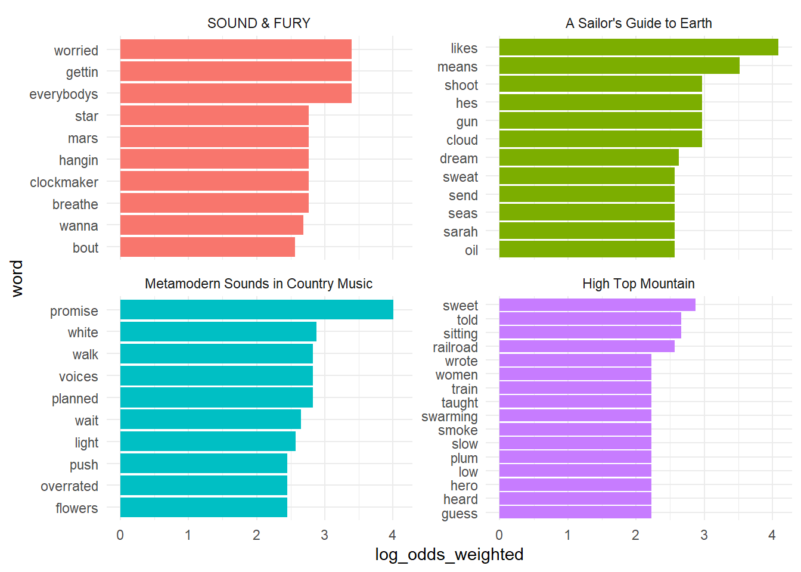
I think the above gives a decent sense of the lyrical variation in each album. High Top Mountain is more traditionally country, with words like railroad, train, smoke, and plum. Metamodern Sounds has more psychadelic lyrics like voices, light, and flowers. And most distinctively, SOUND & FURY has crazier, dystopian lyrics like worried, mars, clocmaker, and star. # Topic Modeling Finally, we can do a little topic modeling to see what categories of lyrics Sturgill often writes about.
sturgill_dtm <- sturgill_combined %>%
rename(text = line) %>%
unnest_tokens(word, text) %>%
anti_join(stop_words, by = "word") %>%
count(song_name, word, sort = TRUE) %>%
cast_dtm(song_name, word, n)
sturgill_lda <- LDA(sturgill_dtm, k = 3, control = list(seed = 123))
sturgill_topics <- sturgill_lda %>%
tidy(matrix = "beta")
sturgill_top_terms <- sturgill_topics %>%
group_by(topic) %>%
top_n(10, abs(beta)) %>%
ungroup() %>%
arrange(topic, desc(beta))
sturgill_top_terms %>%
mutate(term = reorder_within(term, beta, topic)) %>%
ggplot(aes(beta, term, fill = factor(topic))) +
geom_col(show.legend = FALSE) +
facet_wrap(~ topic, scales = "free") +
scale_y_reordered()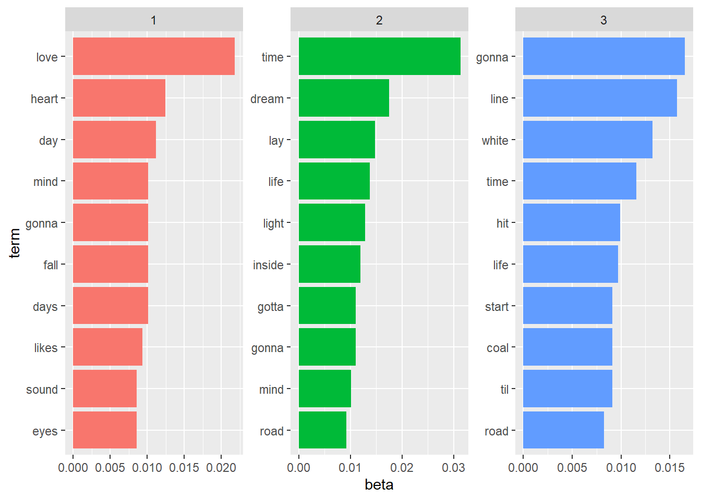
From the above, we see 3 fairly distinct topics: